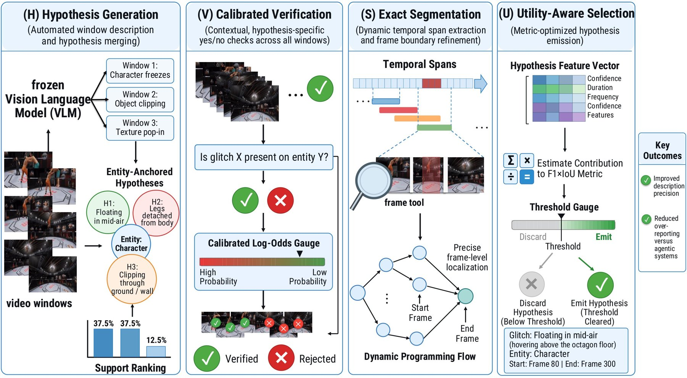

CVPR 2027 submission (under review)
Open-ended glitch detection asks a system to describe every gameplay anomaly in a clip in free text and to localise it in time, and the VideoGlitchBench metric charges every report, matched or not. We contribute a strong, efficient baseline and a diagnostic toolkit for this setting. First, a simple, training-free core for frozen vision-language models describes every two-second window, resolves the observations into entity-anchored events, and reports the best-supported event once with a whole-clip span. On five open backbones it significantly beats tracker-clean same-stack re-runs of the reference agent (four of five against the first re-runs), stays ahead when the agent's output is cut to its published report rate, and needs 4.8–11.3× less time and 3.6–8.4× fewer prompt tokens; a fuller pipeline with verification, segmentation and a learned emission rule adds nothing. Second, the toolkit explains why the agent falls behind: a closed-form emission rule shows that one report per clip is close to optimal under this metric, and the agent's own longest report with a whole-clip span closes most of the gap. Third, cheap controls separate perception from the metric's priors: whole-clip spans are nearly as good as any span, no method yet tells clips with a glitch from true negatives, and a sentence that never sees the video scores close to the systems under the judge, whereas human raters, from text and while watching the clips, rate the core's descriptions far above it and above the agent's reports. We will release the controls with all outputs, so that future systems can be measured against them at little cost.

Choose a clip and step through the pipeline. All windows, hypotheses, support counts, verification scores, spans and utilities below are the outputs of our test run. While the video plays, the outlined cell is the window on screen. Click a window to play that interval, or click a hypothesis to play the windows that support it.
VideoGlitchBench matches predicted and ground-truth reports one-to-one and computes F1×IoU = 2 Σ r·IoU / (5(N+M)), where r is the judge's 0–5 rating, N the number of predicted reports and M the number of ground-truth glitches. Every predicted report enters N, matched or not. We show that a report increases the expected score only if its expected utility exceeds half of the best attainable score, which makes one report per clip close to optimal: the test split has 325 glitches in 383 clips, and only 2.2% of all clips contain more than one glitch. The GliDe re-runs emit 392 to 901 reports on the same clips.
The example of Figure 1, scored on its own (the rating r is the same for every method and can be changed):
Test split: 383 clips from 12 games that were not used for tuning. F1×IoU in %, judged by Llama-3.1-8B-Instruct. Δ: difference to the GliDe re-run with exact game-level permutation p-values. †Significant after Holm correction over the ten comparisons.
Against re-runs without tracker memory failures, all ten comparisons are significant (core +2.70 to +13.54 points). The gain holds under rating×IoU matching and with a second, stricter judge (Qwen2.5-72B-Instruct-AWQ).
All methods timed back to back on the same vLLM server per backbone, 20 test clips from all 12 games, from raw video to the final report. On 100 timing clips the core also makes 2.5–6.3× fewer VLM calls with 3.6–8.4× fewer prompt tokens.
Three raters watched 60 test clips and scored all 150 reports of the core and the GliDe re-run from 0 to 5, without knowing which method produced them. The main judge only reads the reports against the ground-truth text.
| Core (ours) | GliDe (re-run) | Difference per clip [95% CI] | p | |
|---|---|---|---|---|
| Human raters, watching the video | 2.83 | 2.32 | +0.42 [+0.16, +0.71] | 0.004 |
| Human raters without the rater who is an author | +0.40 | 0.017 | ||
| Llama-3.1-8B judge, ground-truth text | 2.32 | 2.27 | −0.05 | 0.815 |
The further stages of HOVER (verification, segmentation and the emission rule) change F1×IoU by at most 0.74 points compared with the core, because window evidence separates glitch from normal windows only weakly (within-video AUC 0.57–0.64). Whole-clip spans cost at most 0.55 points. A fixed sentence that never sees the video scores 23.89 at the median and no method we tested separates clips with a glitch from clips without one, so absolute scores should be read together with these controls. Our human checks are small (140 text pairs and 60 clips) and in-house. One report per clip caps recall at 94.5% of the test glitches. The study covers one benchmark, twelve test games and five open 3–8B backbones.
@inproceedings{anonymous2027reportonce,
title = {Report Once: A Simple Training-Free Baseline and an Audit of
Open-Ended Video Game Glitch Detection},
author = {Anonymous},
booktitle = {Under review at CVPR},
year = {2027}
}